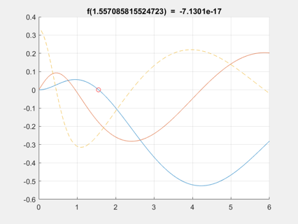
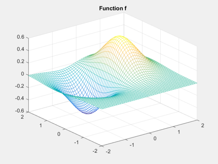
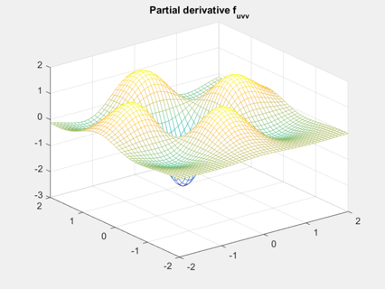

Example 1: Functions, derivatives, and Newton's method
The audi class provides access to derivatives of arbitrary order after initializing arguments accordingly.
Univariate case:
% define univariate function as usual f = @(x) (sin(x)-atan(x))./x; % initialize audi variable of order 2 x = ainit(linspace(0,6),2); % plot function and first two derivatives figure(1), clf, hold on, grid on y = f(x); plot(x{0},[y{0};y{1}],x{0},y{2},'--') % Five iterations of Newton's method starting from x=2.0 yield a zero % of f, which is accurate up to machine precision. The requested % derivative f' is computed automatically. x = ainit(2.0,1); % only first derivatives needed for i = 1:5 y = f(x); x = x - y{0}/y{1}; % audi syntax for x = x - f(x)/f'(x) end plot(x{0},f(x{0}),'ro') title(['f(' num2str(x{0},16) ') = ' num2str(f(x{0}))])
Bivariate case:
% define bivariate function f = @(u,v) u.*exp(v-u.^2-v.^2); % initialize audi grid and evaluate [u,v] = ndgrid(linspace(-2,2,50)); [u,v] = ainit(u,v,3); z = f(u,v); % plot function f and partial derivative f_uvv figure(2), clf, mesh(u{0},v{0},z{0}) title('Function f') figure(3), clf, mesh(u{0},v{0},z{1,2}) title('Partial derivative f_{uvv}') 